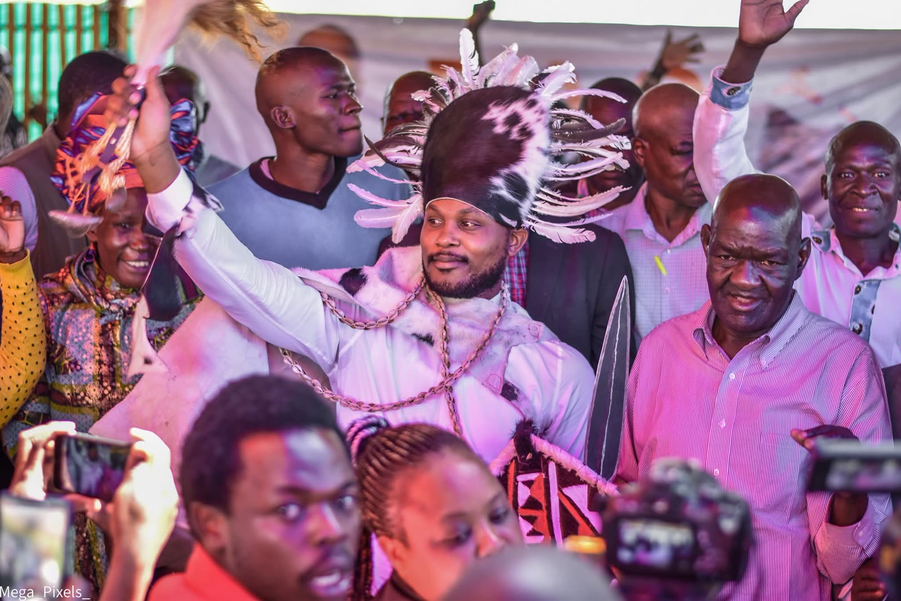

Embakasi South · Ward by ward
Events
Community forums, medical camps, open days and ward visits: where the team will be, and how to be there.
All Events
What is coming up, and what has already happened.
What to Expect
Every event is open to residents, and this is what they are for.

Everyone is welcome
Residents of any ward are welcome. Bring a neighbour.
You will be heard
Events are where residents flag needs and review progress directly with the team.
What is raised is followed up
Anything about a project or a pledge is checked against the Tracker and the Scorecard.
Be part of it 
Find an event near you, add it to your calendar, and bring a neighbour.